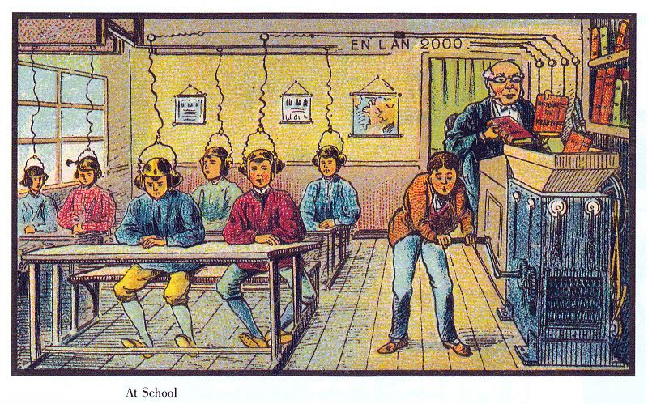
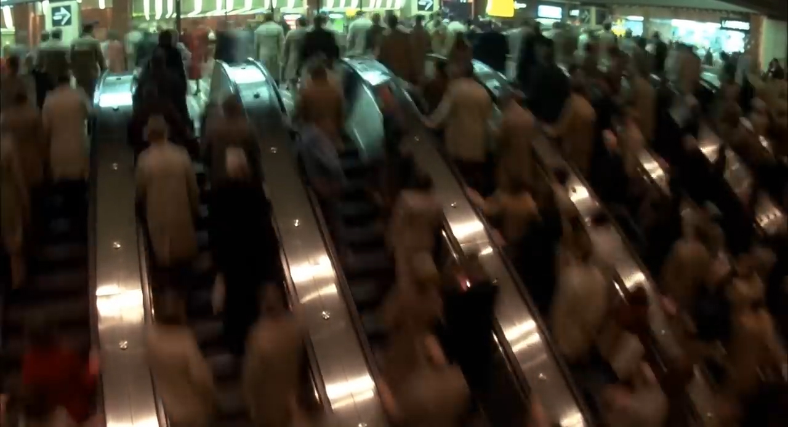
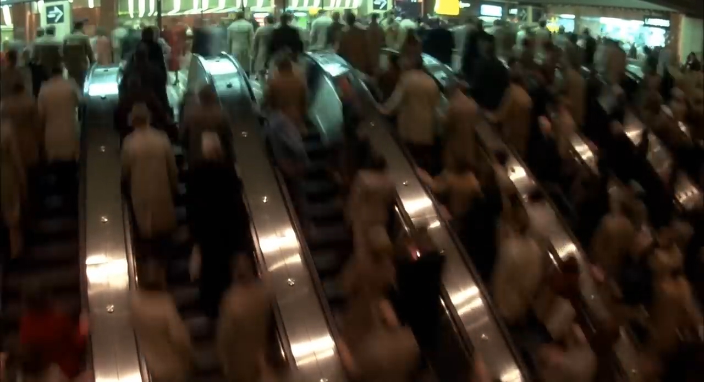

Post-humanity is the most positive and reachable scenario under investigation. It seems to be not only highly probable but also awaited by a broad range of foretellers. The idea of us evolving into a new species is widely discussed nowadays and appears to be not just acceptable but even desirable. Compared with the other scenarios, this course of events is the most promising for humanity. We obviously do not want to suffer or become extinct from a great disaster, but we also do not want to become stuck in our current state as well. The post-human scenario is also one of the most unclear. It gives us hope for survival and even prosperity. The task is to determine how to accomplish this success and the appearance of the new quality.
“Population greater than 1 trillion persons. Life expectancy greater than 500 years. Large fraction of the population has cognitive capacities more than two standard deviations above the current human maximum. Near-complete control over the sensory input, for the majority of people for most of the time. Human psychological suffering becoming rare occurrence.” Each of these possibilities excites us, but it also causes substantial fear. They suggest significant changes in human nature itself, and no one is certain if we will like those changes.
It is a tricky question, and it changes its meaning according to how it is posed. Answers to the same question from our current view or a post-human perspective can differ immensely. If, theoretically, the human era is over and we have reached our new state, it is unlikely that such change has occurred in one day; thus, we will have had a chance to grow accustomed to it and situate ourselves in a new world and new order. Imagine then that there is a human – our ancestor – who is traveling through time to explore the future. That person would be stunned by his or her observations and would struggle to understand the new reality and how it has emerged.
A dilemma of post-humanity and our attitude towards it is the uncertainty over how to plan, imagine or predict a twist of fate. Is it fair to apply our current values and moral judgments? Or we should take into considerations that they might be outdated by then? Nick Bostrom has said, 'An artificial intelligence can be far less human-like in its motivations than a space alien’. But what about the post-human? If we in the present do not like us in the future, does that mean we should not proceed towards that state?
This dilemma is one of the most complex ethical questions of the future. On the one hand, misjudgment and prejudice are abound in history and were solved only through time. On the other hand, if we assume that we have even a tiny chance to direct our history, it is possible that we should take advantage of it and choose the world in which we want to live. In a way, it is almost a theological question that addresses our faith and beliefs. It has no right or wrong answer, but humanity must decide if we are ready to assume the ‘God role’ and interfere with the history of events or if we will obey the 'wisdom of nature'.
Many post-human expectations are closely connected with technologies. Human were dreaming about incredible machines which can advance our existence long before such technology was even close to exploitation. The sketches of famous Italian artist Leonardo Da Vinci offer a prime example. The artist was well known for his multidirectional creative practice, which included painting, sculpting, mathematics, engineering, architecture, music, anatomy, geology, geography and botany. Among other inventions, he drafted several machines, such as a 'spring-powered car', a 'knight robot', a 'tank', a 'parachute' and a 'helicopter’ (Figure 26). Depending on the point of view, each of these can be considered an ancestor of a modern device or simply a lucky guess. There is no way to prove that those designs influenced the following technological developments or that the artist had any sacral knowledge of future.

Figure 26.
The schematic drawings of machines, made by Leonardo Da Vinci appear rather engineering, than artistic and clearly show that the artist was thinking about construction and its application on the first place and only then about aesthetics. On the left there is a “Design for a Flying Machine” (c. 1488) and on the right the “Siege Machine” (c. 1480).
Postcards from 1900 France depicting an artistic vision of the future year 2000 offer a second example. They are part of a series of memorable futuristic illustrations by Jean-Marc Côté and other artists that was issued in France in 1899, 1900, 1901 and 1910. The most special aspect of the images is that despite being completely fictitious, they depict certain aspects exactly right. For example, there is an illustration of the automatic cleaning device ‘Electric Scrubbing', an entire orchestra controlled by one man in 'A Well-Trained Orchestra' or an image of machine which turns books into audio that is called 'At School' (Figure 27). The artists’ guesses are not precise, but they capture the general mood and direction of the progress. Isaac Asimov later published the illustrations in his 1986 book entitled Futuredays: A Nineteenth Century Vision of the Year 2000, which made them available for a wide audience.


Figure 27.
Illustrations created in France by Jean-Marc Côté and his contemporaries to celebrate the turn of the century that show scenes depicting the future of air travel, helicopters, undersea colonies, agriculture and radio.
Côté, Jean-Marc; Asimov, Isaac. 1986. Futuredays: A Nineteenth Century Vision of the Year 2000. New York: Henry Holt & Co.
We already know that the 20th century was focused on the future, and even though many of the ideas and concepts in that time were destined to fail, people also managed to foresee certain courses of events, at least on an abstract level. A case in point is the paper by Velimir Khlebnikov titled 'The Radio of the Future' (1921). During that era, radio was a new, advanced medium that the author considered a tool to connect people and represent their universal sympathy for one another. Khlebnikov imagined a radio as a global communication miracle that extends all over the world through every town and village and can reach every human, even in the most distant part of the planet (Figure 28). In Khlebnikov’s plot, the radio becomes a gigantic screen that is placed in social areas and accessible for all members of the community. It broadcasts not only sound but also images in order to convey news, suggestions, lessons and instructions. Such dreams seem naive and even childish, especially taking into account the political and social condition of Russia at that time, but Khlebnikov’s imagination far surpassed his present. Today, his text clearly indicates the initial direction of media development with the expansion of television and the eventual invention of the Internet. Furthermore, his ideas even exceed our current state, as he dreamed of a tool to unite all humans by sharing common information and knowledge of the world. The irony of this piece is that, in addition to the idea of unification and global connection, the author also predicted the domination of the state, totalitarian control, censorship and lack of freedom. In Khlebnikov’s scenario, all the information and knowledge derives from one place, which is called the ‘Supreme Soviet of Sciences’. The belief in a utopia of the past meets the fear of the present in this visionary text.
Figure 28.
Gabo, Naum. 1919-20. Project for a Radio Station. [Ink on paper]
The idea that humans themselves might be a threat to the future is also involved in the post-human scenario. However, society’s concern for the outcome of its actions is definitely a positive sign. In this sense, it is interesting to consider the recent British television series Black Mirror, which offers a critical view of the future. The piece proposes an explicit dystopian perspective of technological developments, but it serves to raise awareness of such a possibility rather than to foretell the inevitable (Figure 29). The creators selected the most troubling aspects of modern culture and over-exaggerated them to their extreme in order to question the borders of our humanity. The series imparts a feeling that there is a highly fragile layer defining humanity that technologies might disrupt. Several stories become almost shocking to the viewer and prompt contemplation of the value of a critical perspective of our culture. We try to analyze and evaluate our actions, but is it uncertain if we can give a clear judgment of the current moment or if we can we live and reflect simultaneously. Automatisation does not render us worse or better people, but it does offer new possibilities, among which is the potential to research ourselves and learn more about the meaning of being a human. Black Mirror episodes convey a hope that we will never find ourselves in such a dystopian reality.
Figure 29.
The third episode of the first season of The Entire History of You describes a new technology which
records a human’s entire vision throughout the day and can easily play it back. The drama of the episode is built around the jealousy of the main character. He almost touches his wife, going over and over again through her memories. Nevertheless, the scene in the airport where security checks the recordings of last few days feels even more impressive.
Black Mirror (since 2011) [TV-series] Great Britain: Owen Harris, Carl Tibbetts, Otto Bathurst and others.
Another essential example that raises yet unanswered questions derives from the famous U.S. media franchise Star Trek, which has become a cult favourite for several decades. In the second season of Star Trek: The Next Generation, there is a remarkable episode called 'The Measure Of A Man'. At the centre of the story is one of the main heroes of the sequence, Data, who is a uniquely self-aware, sapient, sentient and anatomically fully functional android serving as a second officer on the starship Enterprise. Data is the only one of his kind, and the episode revolves around the question of whether he should be disabled in order to research him and discover his nature or if this would be unethical, as the procedure might cause the loss of his memory and experience. Data refuses to participate in the experiment, and the authorities have to decide if he should be forced into it based on the fact that he is a Starfleet property or if, in view of his development, he has reached a level at which he can be considered a sentient being (Figure 30). The discussion leads the characters to conclusion that the android meets two of the three criteria to define sentient life. He is intelligent and self-aware, and the true question is whether human are capable of measuring the consciousness of another entity or if we do not possess sufficient knowledge to do so.
Figure 30.
This still image from 'The Measure Of A Man' episode depicts the moment of the trial at which it would be decided whether to allow or forbid the disconnection of Lieutenant Commander Data. The First Officer William Riker, against his will, presents the other side and must prove that his friend is simply a machine.
Star Trek: The Next Generation (1987-1994); [TV-series] USA: Cliff Bole, Les Landau, Winrich Kolbe and others.
In general it is clear that our society still have to rase and answer many ethical questions about technologies and our future. The possible rise of artificial intelligence gives a lot of food for thought about our consumer approach towards innovations, but also how should we keep up with the progress in order to not get outdated.
The short film Soft Materials by Daria Martin is a prime example of a sensual and intuitive proposal of future. It does not exhibit any futuristic attributes or a clear narrative, and we do not see a high-tech laboratory or spaceship in the background. In fact, there is almost no environment or clear surroundings at all; most of the scenes are focused on details, which gives the viewer an almost tactile experience. It is a meditative observation of human-machine communication that occurs at a highly personal, intimate and near-erotic level (Figure 31). ‘The woman in the film touches the surface of a blimp tenderly. She caresses the soft white material, it dents and slowly moves away from her hand, restoring its full, round shape. It drifts upwards, she follows it with her eye, her hand half lifting it, half trying to stay in touch; don’t fly away!’ In each scene, human actors are naked, which transforms the experience into a natural game. The movie emphasises the difference between the human body and the apparatus body and proposes a different way of interacting between the two. The way in which people treat the machine in Martin’s movie does not relate to utility or usage. She proposes a sensual exploration of a new unknown entity that is pure and honest, if not childlike.
Figure 31.
Soft Materials (2004); [Film, 16mm, 10 minutes 30 seconds] London: Daria Martin, Maureen Paley.
 
